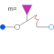

OpenerWithArcMultiphase opener with arc |

|
Diagram
{kind=link}
Information
This information is part of the Modelica Standard Library maintained by the Modelica Association.
Contains m opening switches with arc (Modelica.Electrical.Analog.Ideal.OpenerWithArc).
Parameters (8)
| mh |
Value: m Type: Integer Description: Number of heatPorts=number of phases |
|---|---|
| useHeatPort |
Value: false Type: Boolean Description: =true, if all heat ports are enabled |
| T |
Value: fill(293.15, m) Type: Temperature[mh] (K) Description: Fixed device temperatures if useHeatPort = false |
| Ron |
Value: Type: Resistance[m] (Ω) Description: Closed switch resistance |
| Goff |
Value: Type: Conductance[m] (S) Description: Opened switch conductance |
| V0 |
Value: Type: Voltage[m] (V) Description: Initial arc voltage |
| dVdt |
Value: Type: VoltageSlope[m] (V/s) Description: Arc voltage slope |
| Vmax |
Value: Type: Voltage[m] (V) Description: Max. arc voltage |
Connectors (4)
| plug_p |
Type: PositivePlug Description: Positive polyphase electrical plug with m pins |
|
|---|---|---|
| plug_n |
Type: NegativePlug Description: Negative polyphase electrical plug with m pins |
|
| heatPort |
Type: HeatPort_a[mh] Description: Conditional heat ports |
|
| control |
Type: BooleanInput[m] Description: true => switch open, false => p--n connected |
Components (1)
| openerWithArc |
Type: OpenerWithArc[m] |
|---|